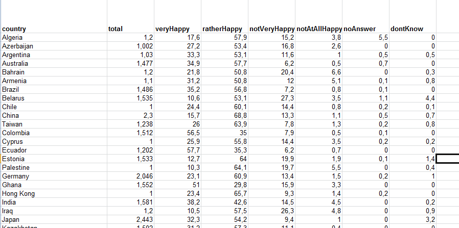
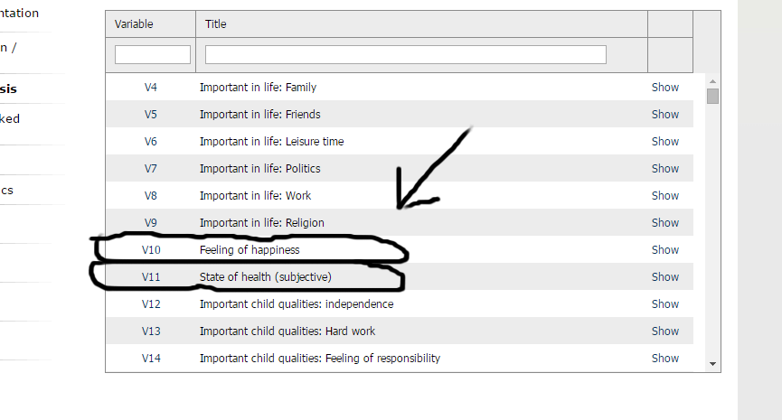
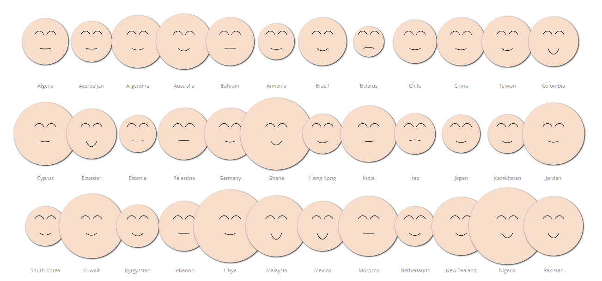

I started with looking at the WVS site. The first thing that hit me was how many steps it takes before you can view the desired data in a good way.
After looking around and exploring the different data sets, I figured I wanted to do something with the statistical variable "Feeling of happiness" which seemed interesting because it listed countries' subjective feeling of happiness.
Initially I felt that I wanted to map the data to a geographical world map by using color to visualize the level of happiness, where the user could interact with every country in an intuitive way.
I downloaded the data in .xls format. At first, it looked like this:
I converted this xls file to a tsv, and I started to experiment with loading the file using D3. After a while though, I came to the conclusion that it's a lot more efficient to flip the rows and columns. So I did this and got this data instead:
At this point, I noticed that the Datamap.js library that I wanted to use could be used to load data dynamically, so I abandoned the initial idea and went with this idea that I've made instead. I also added another dimension, which was the State of health for each country, since I saw it in the variables list on WVS:
Since the map idea didn't go so well, I decided to do a more silly project. It eventually became this idea (inspired by the previous work in Project 1 of another student, and also those infamous faces...) where I dynamically change the smile on a drawn face depending on the level of happiness in a country, and the size of the head depending on the state of health. To add some sort of zoom/narrowing down functionality to it I created message windows that pops up when the user clicks on a head, and that shows the statistics of happiness and health. The final version looks like this in Firefox (where the CSS works as it should):
Notice (in the live visualization) that Egypt apparently is a really unhappy country, and that the state of health in Russia is very poor. For the smile algorithm, I compare the values in the four different categories (very happy, rather happy etc) and draw a specific curve depending on the values.
The size algorithm is a little bit easier: I just take the value for the very good category and adjust in to the "face".
What I wanted to add, but I couldn't because of lack of time, was a filter feature to maybe just show the 5 happiest countries in the world, or some sort of sorting where the user can sort all the heads on state of health for example.
If I get more time after the project, I might do that.
Back to the visualization